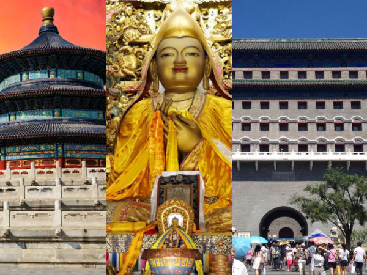

Back to Home Page
My Dream Car | My Favorite Vaction Spot | My Favorite Show |
My Favorite Movie Series |
My Current Location |
My Favorite Video Game | Current Fashion Trends | Citation Page |
Where I was born: Beijing, China
A picture of The Place Museum and the Forbidden City
Beijing, with its acient history goes back to 3000 years. Chinese food in Beijing is phenomenal you have dined at local chinese resturaunts but it does not compare
to the food in Beijing itself. In Beijing you will experience what true chinese food is. Although, most menus are written in chinese so it may be difficult to understand
what you are going to order. The buildings in Beijing are breathtaking it is nothing compared to where you live. The architecture is complex, built with impressive walls,
gates, and unique roof designs you definitely want to visit some famous tourist attractions like the Forbidden City. You can also see pandas in Beijing. Pandas are known
to represent China as a whole. You can see them at the Beijing Zoo and feed them bamboo.
Learn about the history of the Great Wall of China
Some awesome tourist attractions to visit in Beijing:
- The Palace Museum and the Forbidden City
- The Great Wall of China
- The Temple of Heaven
- Beijing National Stadium
What you will see at the tourist attractions listed above!
- The Palace Museum and the Forbidden City:
- Known as the Imperial Palace of China. Home to 24 Ming and Qing Emperors.
This magnificent complex covers 720,000 square meters surrounded by walls that are 10 meters long
with towers in four corners with a 50 meter wide moat.
- The Great Wall of China:
- Enjoy a nice walk by Badaling Pass. Known as the first part of the wall that was opened up in the 1950s.
See an infinite amount of towers and parapets with this amazing view. Although the hills are steep,
there are cable car rides offered as well.
- The Temple of Heaven:
- One of Beijings most sacred buildings. Seperated in two sections,
a rectangular and a semi-circular section that symbolize heaven and earth together.
- Beijing National Stadium:
- The Summer Olympics 2008 was held in the Beijing National Stadium. Also known as the Bird's Nest for its shape.
With its unique design created by traditional Chinese ceramics, this stadium has been used for
hosting cultural events, concerts, and sports matches.
Some other beautiful locations to visit in Beijing:
- Tiananmen Square
- Lama Temple
- Jingshan Park
- Ming Dynasty Tombs
- Jingyiyuan
These are my favorite foods I have tried for breakfast, lunch/dinner, and dessert:
| Breakfast |
Lunch/Dinner |
Dessert |
| Baozi |
Jiaozi |
Tanghulu |
| Jian Bing |
Dalian Huoshao |
Wandou Huang |
| Soy milk and youtiao |
Zhizi Kaorou |
Nian Gao |
Click on a section of the image to learn more about these attractions!

Send Me an Email: liu61@uwindsor.ca
Back to top